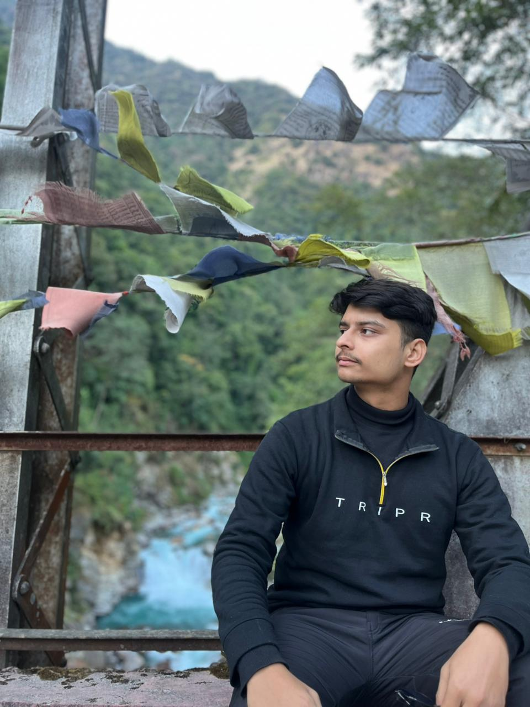

Frontend Development
HTML, CSS, JavaScript, TypeScript, React, Tailwind CSS, Bootstrap
Available for opportunities
A BCA graduate and web developer from Nepal. I build responsive websites and practical web applications using modern frontend technologies, with experience in API integration, debugging and testing.

I enjoy turning ideas into useful, accessible and user-friendly web experiences.
I graduated with a Bachelor of Computer Applications (BCA) from SRM University, Sikkim. My development experience includes building responsive interfaces, integrating APIs, debugging issues and testing web applications.
I work with technologies including HTML, CSS, JavaScript, React, TypeScript, Node.js and databases. I also use AI-assisted development tools to explore solutions and improve my workflow while reviewing and understanding the code I use.
I'm interested in frontend and full-stack development, web application development and software quality assurance.
Technologies and tools I use in my development work.
HTML, CSS, JavaScript, TypeScript, React, Tailwind CSS, Bootstrap
Node.js, Express.js, Python, MongoDB, MySQL, REST APIs
Git, GitHub, VS Code, API integration, debugging, responsive design and testing
AI-assisted development tools and prompt engineering
Worked on responsive web interfaces, API integration, debugging and testing. Contributed to user interface improvements and cross-device compatibility.
Completed foundation training related to the Internet of Medical Things and wearable technologies. Related project work included an Arduino Nano 33 ECG monitoring system.
CGPA: 8.3/10
Selected web projects and development work.
A Nepal-focused travel platform featuring destination discovery and a travel-planning experience.
React, TypeScript, Tailwind CSS, Node.js, Express, MongoDB
Visit WebsiteA logistics website associated with my frontend development experience, including responsive interfaces and user interface improvements.
HTML, CSS, JavaScript, Web UI
Visit WebsiteA technology event website designed to present event information through a responsive interface.
HTML, CSS, JavaScript, UI Design
Visit WebsiteA restaurant ordering platform that enables customers to scan table QR codes, browse digital menus and place dine-in orders. Restaurant staff can manage orders through a dedicated dashboard.
React, TypeScript, Tailwind CSS, Node.js, Express, MongoDB
Visit WebsiteMy professional portfolio showcasing my technical skills, experience, selected projects and certificates.
HTML, CSS, JavaScript, GitHub Pages
Visit WebsiteTraining and professional learning.
STPI, Gangtok
Nexon Logistics
Technology event / training
I'm open to suitable opportunities in frontend development, web development and related technology roles. Feel free to get in touch.